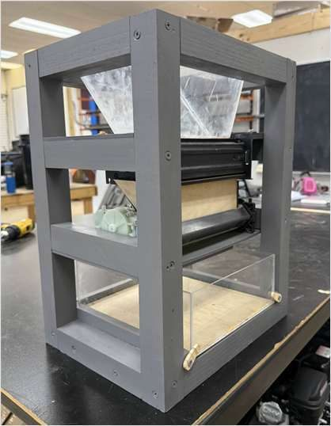
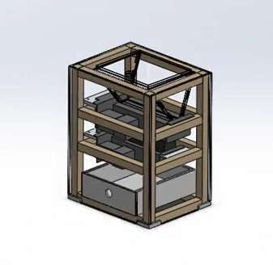
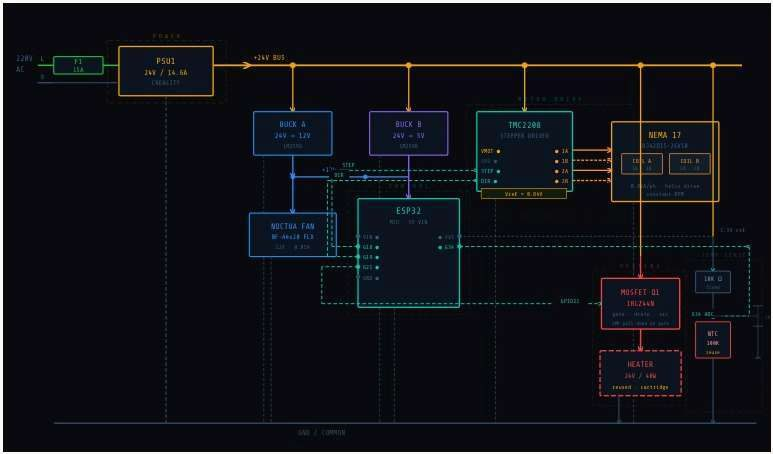

ECOFIL Filament Recycler
Every makerspace generates buckets of failed prints and scrap plastic. ECOFIL is a startup I co-founded to close that loop: a three-stage machine line that shreds waste plastic, dries it, and extrudes it back into usable 3D-printer filament. I lead the mechanical design, with every assembly modeled in SolidWorks using GD&T for precise component mating.
Phase 1: Plastic Shredder
The shredder reduces failed prints to uniform flake. I designed the cutter stack and frame in SolidWorks, then built the prototype with CNC milling (SolidWorks CAM), laser cutting (Lightburn), and MIG welding.


Phase 2: Filament Dehydrator
Moisture ruins extrusion quality, so shredded flake passes through a heated dehydrator before it reaches the extruder. I ran thermal analysis in SolidWorks Simulation to optimize the drying process. The prototype uses PTC heating elements, thermistors, fans, and hygrometers for closed-loop humidity control.


Phase 3: Filament Extruder
The extruder melts dried flake and draws it into spooled filament at a consistent diameter. The design combines a high-voltage AC drive motor, stepper-driven spooling, and linear Hall-effect sensing for real-time diameter monitoring.


Electronics and Controls
All three stages run on Arduino controllers tied to a common sensing layer of Hall-effect sensors, MOSFETs, thermistors, and hygrometers for real-time monitoring and control of the recycling process.

Funding and Operations
ECOFIL secured incubator funding and material donations from Aggies Create, Tyrex, and the TAMU Meloy program. I manage project finances and materials through detailed BOMs, and we completed the filament recycler within budget.
Top Skills Utilized
- SolidWorks
- GD&T
- Arduino
- CNC Milling
- Laser Cutting
- 3D Printing
- MIG Welding
- Thermal FEA